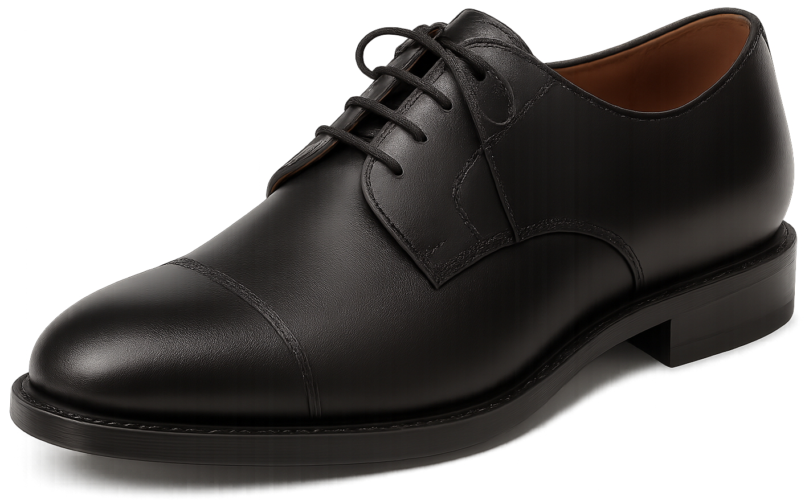
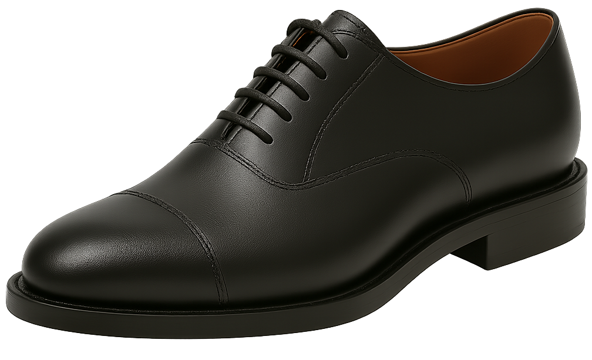

Sapatos Clássicos

Oxford
Sapato elegante com cadarço fechado, perfeito para ocasiões formais e visuais sofisticados.

Derby (Gibson)
Modelo confortável com cadarço aberto, ótimo para combinar com looks formais ou casuais.

Blucher
Sapato moderno com abas costuradas sobre o cabedal, ideal para um estilo casual e descontraído.